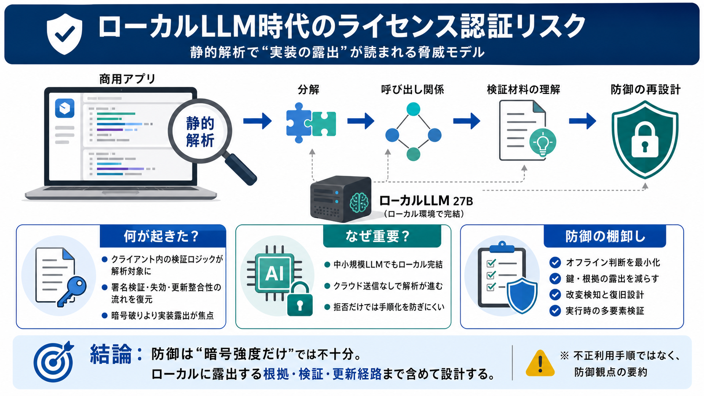

Qwen3.8-27B - SGLang Documentation
Picking DFLASH2 requires SGLang built from main. DFlash2 landed in #35371, and DFlash2 + NVFP4 — the quantized `lm_head`…

Picking DFLASH2 requires SGLang built from main. DFlash2 landed in #35371, and DFlash2 + NVFP4 — the quantized `lm_head`…
If you get Torchcodec issues, be sure to do the below then relaunch vllm. #### SGLang: SGLang is not yet supported sin…
``` {"longest_edge": 469762048, "shortest_edge": 4096} ``` Alternatively, override the default values via eng…
Imagine models capable of exploiting any and every piece of software written by less capable people or other weaker LLMs…
Running locally on hardware like a dual NVIDIA DGX Spark cluster with the NVFP4 quantized version produced roughly 15 to…